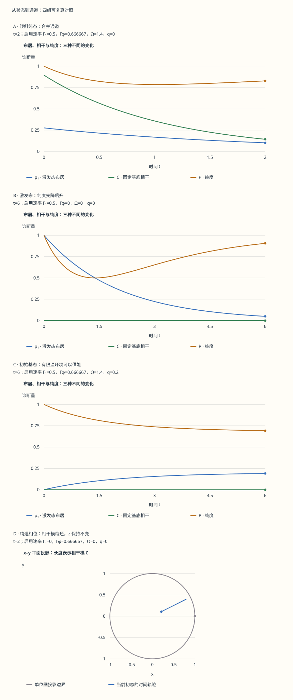

本页目录
开放量子系统 · 退相干、耗散与量子通道
先修：复数、矩阵乘法、两能级系统。学习目标：从系统与环境的联合态出发，分别核对布居、相干、纯度与通道的完全正性；用同一个单比特模型连接主方程、Kraus 算符和可复算实验。 本页的主线：一个激发态开始是纯态，向零温环境释放能量后，最终也成为纯态。中途为什么会变混？“耗散越久，纯度越低”究竟错在哪里？
先预测，再把三种解法对在一起
实验固定能量基底：\(|0\rangle\) 是基态，\(|1\rangle\) 是激发态。可选择倾斜纯态、两个能量本征态、\(|+\rangle\) 和最大混合态；环境可选择幺正进动、纯退相位、零温阻尼、零温合并或有限温合并通道。
先试“纯度先降后升”：预测末时刻的激发布居、相干模、纯度与能量是否不同于初始值，然后看整段曲线。再试“混合态被冷却”和“有限温吸收与发射”。同一个耗散通道作用于不同初态，不一定让纯度朝同一方向变化。
每次换参数，图与数值先收起，避免预测时已经看见答案。“不变”按两个端点之差不超过 \(10^{-8}\) 判断；它不表示整段轨迹恒定。表格提供全部时间节点、密度矩阵、Kraus 算符、Choi 状态和半群复算；下载保留未格式化的浮点数。无抽样噪声，也没有 Euler 步进。
无脚本也可以复算：图中四组参数与下表均来自同一份固定记录。先读第 5 节解析式，再核对各曲线终点。

| 对照 | p₁ | C | P | λmin | S / bit |
|---|---|---|---|---|---|
| A · 倾斜纯态：合并通道 | 0.101679377 | 0.143000792 | 0.827543251 | 0.0953129289 | 0.453959347 |
| B · 激发态：纯度先降后升 | 0.0497870684 | 0 | 0.905383368 | 0.0497870684 | 0.28549175 |
| C · 初始基态：有限温环境可以供能 | 0.190042586 | 0 | 0.692147197 | 0.190042586 | 0.701560539 |
| D · 纯退相位：相干模缩短，z 保持不变 | 0.276393202 | 0.235768448 | 0.62779338 | 0.247222053 | 0.806845421 |
下载这四组完整固定记录。默认初态为 (0.8,0.4,√0.2)；B 为激发态，C 为基态、q=0.2。A/B/C 的最终纯度不同，不能用“耗散”一词替代计算。
图表分别展示诊断量、等比例的 \(x\!-!y\) 投影、本征值与熵。投影中的半径是相干模 \(C\)，不是完整 Bloch 半径；还需要读取 \(z\)。手机可横向滚动大图与数值表。
1. 相同的布居，为什么仍然可能是不同的态？
比较 \(|+\rangle=(|0\rangle+|1\rangle)/\sqrt2\) 和以相同概率制备 \(|0\rangle,|1\rangle\) 的集合。二者测量能量都各有一半概率，但前者测 \(\sigma_x\) 必得 \(+1\)，后者得到两个结果的概率相同。密度矩阵把这一区别保留下来：
一般制备集合给出 \(\rho=\sum_jp_j|\psi_j\rangle\langle\psi_j|\)，但这个分解通常不唯一；\(I/2\) 也可由等概率的 \(|+\rangle,|-\rangle\) 制备。不能只凭约化态的矩阵，推断某一次样品“实际上是哪一个纯态”。
合法密度矩阵满足 \(\rho=\rho^\dagger\)、\(\rho\ge0\)、\(\operatorname{Tr}\rho=1\)。谱分解给出非负本征值 \(\lambda_j\)，故 \(\operatorname{Tr}\rho^2=\sum_j\lambda_j^2\le1\)，等号当且仅当只有一个本征值为 1，即纯态。非对角元描述相对于指定基底的相干性：任何密度矩阵都能在自己的本征基底中对角化，这不意味着所有量子现象都消失了。
2. 偏迹怎样把环境中的记录留在系统统计里？
取环境任意正交完备基 \(\{|e_\mu\rangle\}\)，定义
第二式可由把联合矩阵的环境指标收缩直接验证。它说明偏迹恰好保留全部局域测量统计；这里的求和来自完备关系，不是另加一个“所有环境状态等概率”的假设。
若 \(a|0\rangle+b|1\rangle\) 与环境相互作用后变成 \(a|0\rangle|E_0\rangle+b|1\rangle|E_1\rangle\)，则
环境记录越容易区分，交叠的模越小，系统的干涉可见度越低。这解释了局域相干项为何减小；整体仍可保持纯态。它既没有选出某个唯一测量结果，也没有保证衰减必然是指数或永不恢复。
3. 从一次环境相互作用得到 Kraus 通道
先明确初态假设：对所有待输入的系统态，环境都从同一个 \(\rho_E\) 出发，且初始态为 \(\rho\otimes\rho_E\)。先设环境纯态 \(|e_0\rangle\)，联合演化为幺正算符 \(U\)。把上一节偏迹展开，令 \(K_\mu=\langle e_\mu|U|e_0\rangle\)，得到
混合环境可先谱分解，将对应概率的平方根吸收到 Kraus 算符中。每一项 \(K\rho K^\dagger\) 都半正定，第二个等式保证保迹。
为什么还要说“完全正”？让系统与任意辅助系统纠缠，对辅助系统不作操作，此时 Kraus 算符变成 \(K_\mu\otimes I\)，相同的半正定证明仍成立。仅检验若干单比特输入不够：转置映射保留单系统本征值，却把一个 Bell 态的部分转置变成本征值含 \(-1/2\) 的矩阵，因而不是完全正映射。若输入一开始已和环境相关，以上固定环境、任意输入的通道构造不能直接照搬。
4. 主方程需要哪些假设？
在有限维系统中，范数连续、时间齐次的 CPTP 半群满足 \(\Phi_0=\mathrm{id}\)、\(\Phi_{t+s}=\Phi_t\Phi_s\)。其生成元可写成 GKSL 形式：
循环使用迹的性质即可看出右端的迹为零。完全正性不是从这一个保迹等式推出的，而由 GKSL 结构与相应半群定理保证。常速率并非所有环境的准确描述；弱耦合、较短环境相关时间及适当的长期粗粒化，才是常见的物理出发点。
本页选择 \(H_{\rm rot}=\hbar\Omega\sigma_z/2\)，以及向下、向上、纯退相位三个算符：
进动哈密顿量只是这里的旋转约定；能量读数另以固定 \(H_0=\hbar\omega_0|1\rangle\langle1|\) 定义，因此 \(E/(\hbar\omega_0)=p_1\)。这两个算符的区别避免把进动方向和能量零点混在一起。
5. 逐项算出 Bloch 方程
采用 \(\sigma_z=|0\rangle\langle0|-|1\rangle\langle1|\)。令
例如向下算符的 \(L\rho L^\dagger\) 将 \(\Gamma_\downarrow\rho_{11}\) 加到基态布居，反对易子将同样的量从激发态布居扣除，并使 \(\rho_{01}\) 以速率 \(\Gamma_\downarrow/2\) 衰减。向上算符反向转移布居；\(\sigma_z\rho\sigma_z-\rho\) 只改非对角元。相加得到
定义 \(\Gamma_1=\Gamma_\downarrow+\Gamma_\uparrow\)、\(\Gamma_2=\Gamma_1/2+\Gamma_\phi\)。当 \(\Gamma_1>0\) 时，令 \(q=\Gamma_\uparrow/\Gamma_1\)、\(z_{\rm eq}=1-2q\)。解一阶线性方程便有
若关闭所有布居跃迁，\(\Gamma_1=0\)，直接读原方程得到 \(z(t)=z(0)\)，无需用 \(0/0\) 定义平衡布居。幺正通道同时关闭退相位，纯退相位通道再关闭进动；振幅阻尼通道只保留向下跃迁。实验的五个通道正是这些明确的取舍。
6. 有限温平衡与 T₁、T₂ 的边界
在热浴满足详细平衡、能隙为 \(\hbar\omega_0>0\) 时，
因此零温 \(q=0\) 只向基态弛豫，有限正温 \(0<q<1/2\) 同时发生吸收和发射，\(q=1/2\) 是无限温极限。任意两个正速率不自动构成已知温度的热浴；详细平衡才提供温度解释。实验让 \(q\) 与总速率分别可调，用来比较平衡点与达到平衡的快慢。
在本页常速率模型中，\(T_1=1/\Gamma_1\)、\(T_\phi=1/\Gamma_\phi\)，于是
这里有限温 \(T_1\) 是总布居弛豫时间，而不是仅向下的寿命。非指数衰减、驱动着装态、泄漏到第三能级等情况，可能需要重新定义实验拟合出来的时间尺度。纯退相位不改本模型的能量，是因为它不改固定能量基底中的布居；不能把这句话脱离基底与哈密顿量条件使用。
7. 用 Kraus 算符复算同一个解析解
记 \(\eta=e^{-\Gamma_1t}\)、\(\ell=1-\eta\)。热交换通道可由四个实矩阵表示：
前两项之和的 \(A_j^\dagger A_j\) 为 \((1-q)I\)，后两项为 \(qI\)，故总和为 \(I\)。直接相乘，激发布居成为 \((1-q)\eta p_1+q[p_1+\ell(1-p_1)]=\eta p_1+q\ell\)，相干项乘 \(\sqrt\eta\)，正好复现上一节解。
再令 \(d=e^{-\Gamma_\phi t}\)，引入
退相位通道保留布居，相干项乘 \((1+d)/2-(1-d)/2=d\)，再经幺正进动得到 \(e^{-i\Omega t}\)。实验逐项列出八个 \(K_{bj}\) 及 \(K_{bj}\rho K_{bj}^\dagger\) 的下载记录，核对与 Bloch 解之差。零速率或 \(t=0\) 时会出现零算符，保留它们不会改变通道。
8. Choi 状态怎样检查完全正性？
取归一化 Bell 态 \(|\Phi^+\rangle=(|00\rangle+|11\rangle)/\sqrt2\)，定义 \(J_\Phi=(I\otimes\Phi)(|\Phi^+\rangle\langle\Phi^+|)\)，约定指标顺序为输入 \(\otimes\) 输出。令 \(c=(1-2q)(1-\eta)\)、\(\lambda=e^{-\Gamma_2t}\)、\(\theta=\Omega t\)，逐个作用于四个矩阵单位 \(|i\rangle\langle j|\) 得到
它的迹是 1，沿输出求偏迹为 \(I/2\)。两个本征值直接是中间两个对角元，其余两个由角上的 \(2\times2\) 块求得：
在本页 \(\eta\ge0\)，完全正性等价于 \(|c|\le1-\eta\) 与 \(c^2+4\lambda^2\le(1+\eta)^2\)。代入 \(|1-2q|\le1\)、\(\lambda^2=\eta e^{-2\Gamma_\phi t}\le\eta\)，即得两式。一般有限维线性映射的 Choi 半正定与完全正性等价：从 Kraus 形式可写成向量外积之和；反过来，对 Choi 矩阵谱分解后把每个向量按输入/输出指标还原成矩阵，就得到 Kraus 表示。
实验同时保留 Kraus 外积构造与上述闭式。极小的负本征值若只在约 \(10^{-16}\) 的浮点舍入尺度内出现，应与数学上的负本征值区分；不能用任意截断掩盖明显违反正性的结果。
9. 纯度先降后升，不意味着出现了记忆回流
取零温激发态初始条件，\(p=e^{-t/T_1}\)、\(C=0\)，则
在 \(t=T_1\ln2\) 时 \(p=1/2\)，纯度最小为 \(1/2\)、熵最大为 1 bit；随后纯度上升，熵下降，最终成为纯基态。能量却始终下降。这个过程仍是常速率 CPTP 半群：单个状态的纯度回升，不能单独诊断非马尔可夫记忆。
另一个有用的对照是 \(I/2\) 的零温冷却：它从一开始就越来越纯。纯退相位则在固定布居下缩小 \(C\)，因而不会增加单比特纯度。幺正进动保持布居、相干模、纯度、本征值和熵；这些诊断量始终恒定，虽然非平凡进动下整个矩阵通常没有长时间逐点极限。
10. 环境记录、测量结果和测量装置并非同一对象
一次记录为 \(m\) 的测量可包含多个 Kraus 算符 \(M_{m\alpha}\)。令
POVM 元素 \(E_m\) 决定概率，却不唯一决定条件态。例如给所有该结果的算符左乘同一个结果相关幺正矩阵，\(E_m\) 不变，输出态可以改变；还需要指定测量 instrument，即各结果对应的完全正操作。
不读取结果时，将 \(p(m)\rho_m\) 求和得到非选择性通道；读取结果时才讨论相应条件态。主方程描述的平均态、某种探测方案下的量子轨迹和一次条件更新回答不同问题。上一页的量子跳跃实验采用光子计数方案；换成别的环境测量，条件轨迹可以不同，而平均主方程相同。
11. 从基础模型走向前沿：先知道模型何时不够
“宏观叠加为什么难保持”需要具体环境和尺度。一个可算的简化模型是：每次独立散射把位置相干项乘实数 \(f\in[0,1]\)，单位时间平均碰撞 \(\nu\) 次，次数服从 Poisson 分布。平均相干因子为
\(f\) 接近 0 表示单次散射已能分辨两条位置分支；\(f\) 接近 1 表示几乎未留下哪条路径的信息。物体尺寸、分支间距、光场或气体条件都进入 \(\nu,f\)。没有这些条件，不能给“桌子”或“尘埃”一个普遍的退相干时间，更不能断言所有宏观叠加都无法观测。
研究中可能需要时变速率、强耦合、结构化环境、初始相关或多体相关噪声。比如环境仅造成两个相反的随机相位 \(\pm gt\)，平均相干因子为 \(\cos gt\)：它可先消失后恢复，明显不是本页的指数半群。时变生成元某段出现负的退相位率，不等于从初始时刻到当前时刻的映射一定不完全正；还需区分整体通道和中间传播映射。相位协变单比特模型的这一边界可继续阅读Filippov、Glinov 与 Leppäjärvi 的研究。
量子工程也不只是延长一个 \(T_2\)：控制误差、泄漏、空间和时间相关、制备与读出误差，以及通信中的损失，都需要独立诊断。学习这里的收益，是知道每项读数究竟支持什么结论，而不是用一个退相干参数解释所有实验失败。
12. 六道迁移题：从公式走到可检验的判断
1. 幺正进动让非对角元改变，为什么相干模仍不变？
\(\rho_{01}(t)=e^{-i\Omega t}\rho_{01}(0)\)，复数的相位变了、模不变，所以 \(C(t)=2|\rho_{01}(0)|\)。布居不变，Bloch 半径不变，纯度和熵也不变。除非初始相干为零或 \(\Omega=0\)，矩阵仍会随时间变化；不能把“几个诊断量不变”误读成“整个态不变”。
2. 零温激发态的最混时刻在哪里？
由 \(P=2p^2-2p+1\) 得 \(dP/dp=4p-2=0\)，故 \(p=1/2\)。结合 \(p=e^{-t/T_1}\)，得 \(t=T_1\ln2\)。此时 \(\rho=I/2\)、\(P=1/2\)、\(S=1\) bit；当 \(t\to\infty\)，\(\rho\to|0\rangle\langle0|\)，\(P\to1\)。在实验选“纯度先降后升”，曲线应穿过这两个阶段。
3. 为什么 Euler 更新即使很小一步也可能破坏完全正性？
仅考虑零温振幅阻尼，令 \(a=\Gamma_1\Delta t>0\)。Euler 映射给 \(\eta=1-a\)、\(c=a\)、\(\lambda=1-a/2\)。Choi 角块行列式为 \(\{(1-a)-(1-a/2)^2\}/4=-a^2/16<0\)，所以任意正步长都不是完全正映射，尽管误差随步长缩小。更大步长还可能让激发态布居直接变成负数。实验用解析半群和 Kraus 表示，避免将“局部截断误差很小”误当成“物理合法性已保证”。
4. q=0.2、T₁=2 对应怎样的向上、向下速率？
\(\Gamma_1=0.5\)，所以 \(\Gamma_\uparrow=q\Gamma_1=0.1\)、\(\Gamma_\downarrow=(1-q)\Gamma_1=0.4\)，\(z_{\rm eq}=0.6\)。若额外假设热详细平衡，\(\beta\hbar\omega_0=\ln(\Gamma_\downarrow/\Gamma_\uparrow)=\ln4\)。从基态出发，\(p_1(t)=0.2(1-e^{-t/2})\)：系统吸收能量而不是总在降温。
5. 如何从两次半程复现一次全程？
写 \(z(t)=\eta_tz_0+c_t\)，其中 \(\eta_t=e^{-\Gamma_1t}\)、\(c_t=z_{\rm eq}(1-\eta_t)\)。两次合成得 \(\eta_s\eta_t=e^{-\Gamma_1(s+t)}\) 和 \(\eta_sc_t+c_s=z_{\rm eq}(1-e^{-\Gamma_1(s+t)})\)。横向衰减指数相乘，绕同轴的旋转角相加，也得到 \(s+t\) 的解。关键是两段使用相同速率和平衡点；中途换浴不能继续套同一个半群参数。
6. 纯退相位的随机相位模型能否说明测量选中了哪个结果？
令一个辅助比特控制系统的相位为 \(+gt\) 或 \(-gt\)，两分支等权且忽略辅助比特。系统相干项乘 \((e^{igt}+e^{-igt})/2=\cos gt\)，布居保持不变。它可以解释平均干涉的消失与恢复，却没有指定观测辅助比特的方式，更没有从平均密度矩阵中挑出一个唯一结果。若进一步测量辅助比特，必须给出结果对应的操作，再按第 10 节计算条件态。
继续阅读：第 7 节可与Arsenijević 等关于振幅与相位阻尼 Kraus 算符的推导对照。本文实验只实现上文明确写出的常速率单比特模型；对更一般开放系统不能仅凭本页的解析式外推。